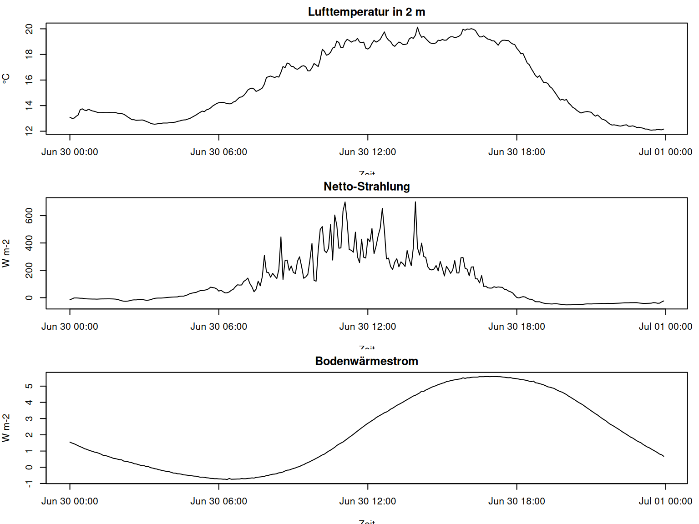

#> [1] 288
#> [1] "2017-06-30 00:00:00 CEST" "2017-06-30 23:55:00 CEST"
#> Time differences in mins
#> Min. 1st Qu. Median Mean 3rd Qu. Max.
#> 5 5 5 5 5 5
#> [1] "record" "datetime" "Ta_2m" "Huma_2m"
#> [5] "Ta_10m" "Huma_10m" "Windspeed_2m" "Windspeed_10m"
#> [9] "rad_sw_in" "rad_sw_out" "RsNet" "RlNet"
#> [13] "rad_net" "LUpCo" "LDnCo" "water_vol_soil"
#> [17] "Ts" "heatflux_soil" "PCP"Ziel dieser Kurseinheit
Die theoretischen Grundlagen zu Geländeklima, Mikroklima und Energieflüssen sind im Kurs bereits behandelt. Diese Einheit setzt deshalb nicht erneut bei der Theorie an. Sie zeigt, wie eine reale Stationsdatei so gelesen wird, dass sie als Arbeitsgrundlage für fieldClim nutzbar wird.
Die zentrale Übersetzung lautet: Aus einem Messstandort wird in R zunächst eine Tabelle. Aus der Tabelle wird anschließend ein fachlich geordnetes Stationsobjekt. Erst dieses Objekt macht die weitere Paketlogik stabil, weil Zeitachse, Messhöhen, Standort, Strahlung, Bodenwärmestrom und Oberflächenannahmen gemeinsam weitergegeben werden.
HinweisArbeitsprinzip in R
Der Code bleibt absichtlich einfach. Wir verwenden read.csv(), direkte Spaltenzugriffe mit $, kleine data.frame()-Tabellen und base-R-Plots. Das Ziel ist nicht ein eleganter R-Stil, sondern eine nachvollziehbare Übersetzung von Stationsdaten in fieldClim-Berechnungen. Pfade laufen über here::here(). Wenn die Kursdatei data/caldern_wiese_2017-06-30.csv nicht vorhanden ist, nutzt der Code als Fallback die mit dem Paket ausgelieferte Beispieldatei.
Vom Gelände zur Tabelle
Eine Klimastation misst keine Theorie. Sie schreibt Zeitpunkte und Sensorwerte in Spalten. Die Anwendung beginnt deshalb nicht mit der Frage, welche Formel am Ende verwendet wird, sondern mit der Frage, ob die Messdatei als Zeitreihe überhaupt sauber lesbar ist.
Im Caldern-Beispiel geht es um einen vollständigen 5-Minuten-Tag auf einer Wiese. Ein vollständiger Tag mit 5-Minuten-Zeitschritten hat 288 Werte. Diese Zahl ist nicht nur Buchhaltung. Sie ist ein erster Test, ob spätere Tagesgänge und Energieflüsse zeitlich sinnvoll interpretiert werden können.
Erste Kontrolle
Der erste R-Schritt ist schlicht: Zeilenzahl, Zeitraum, Zeitschritt und Spaltennamen prüfen. Diese vier Ausgaben reichen oft schon aus, um grobe Probleme zu erkennen. Wenn Zeitstempel nicht als Datum-Zeit-Objekt vorliegen oder der Zeitschritt springt, können Strahlungs- und Tagesganginterpretationen falsch werden.
Die Ausgabe wird nicht als formaler Bericht gelesen. Sie dient als Arbeitskontrolle: Gibt es den erwarteten Tag? Ist die Zeitachse gleichmäßig? Sind die Spalten vorhanden, die später für fieldClim gebraucht werden?
Messgrößen als Rollen lesen
Die Stationsspalten sind zunächst technische Namen. Für den Workflow müssen sie fachlich gelesen werden. Ta_2m ist Lufttemperatur in zwei Metern Höhe. Ta_10m ist die zweite Temperaturhöhe. Huma_2m und Huma_10m bilden das Feuchteprofil. Windspeed_2m und Windspeed_10m bilden das Windprofil. rad_net steht als Arbeitsgröße für Netto-Strahlung. heatflux_soil steht für Bodenwärmestrom.
Die folgende kleine Tabelle ist bewusst handgemacht. Sie zeigt, wie man aus vielen Spalten eine kontrollierte Auswahl erzeugt, ohne sofort in Paketfunktionen zu springen.
#> datetime Ta_2m Ta_10m Huma_2m Huma_10m Windspeed_2m Windspeed_10m
#> 1 2017-06-30 00:00:00 13.09 13.60 100.0 97.6 0.448 0.529
#> 2 2017-06-30 00:05:00 13.01 13.51 100.0 97.7 0.380 0.409
#> 3 2017-06-30 00:10:00 13.02 13.66 100.0 96.5 0.548 0.670
#> 4 2017-06-30 00:15:00 13.16 13.76 100.0 96.1 0.581 0.658
#> 5 2017-06-30 00:20:00 13.27 13.80 100.0 96.4 0.764 0.887
#> 6 2017-06-30 00:25:00 13.69 14.25 98.1 92.4 0.589 0.744
#> rad_net heatflux_soil
#> 1 -15.200 1.551533
#> 2 -8.920 1.492695
#> 3 -1.965 1.448708
#> 4 -1.790 1.390439
#> 5 -2.469 1.325316
#> 6 -3.857 1.268762
#> Ta_2m Ta_10m Huma_2m Huma_10m
#> Min. :12.08 Min. :12.87 Min. : 54.63 Min. :52.09
#> 1st Qu.:13.27 1st Qu.:13.65 1st Qu.: 61.11 1st Qu.:58.83
#> Median :15.29 Median :15.68 Median : 82.90 Median :76.00
#> Mean :15.77 Mean :16.02 Mean : 80.44 Mean :76.55
#> 3rd Qu.:18.85 3rd Qu.:18.65 3rd Qu.: 96.62 3rd Qu.:93.03
#> Max. :20.13 Max. :19.99 Max. :100.00 Max. :99.30
#> Windspeed_2m Windspeed_10m rad_net heatflux_soil
#> Min. :0.1400 Min. :0.2720 Min. :-52.36 Min. :-0.75577
#> 1st Qu.:0.4918 1st Qu.:0.6230 1st Qu.:-17.43 1st Qu.: 0.02899
#> Median :0.6860 Median :0.8205 Median : 48.34 Median : 1.55380
#> Mean :0.7942 Mean :0.9763 Mean :110.84 Mean : 2.14723
#> 3rd Qu.:1.0597 3rd Qu.:1.2235 3rd Qu.:215.55 3rd Qu.: 4.48683
#> Max. :1.9570 Max. :3.1440 Max. :700.70 Max. : 5.59189Ein erster Tagesgang
Bevor ein Paketworkflow gestartet wird, muss man die Messreihe sehen. Ein Plot zeigt nicht die Wahrheit, aber er zeigt, ob die Größenordnung und der Tagesgang plausibel sind. Für den Einstieg reicht base R.

Diese drei Kurven verbinden den bekannten Theoriehintergrund mit der Datenanwendung. Temperatur beschreibt den lokalen Zustand der bodennahen Luft. Netto-Strahlung beschreibt den radiativen Antrieb. Bodenwärmestrom beschreibt den Anteil, der in den Boden geht oder aus ihm kommt. Für Wärmeflussmethoden ist die Kombination entscheidend.
Das weather_station-Objekt
fieldClim arbeitet nicht nur mit losen Vektoren. Der zentrale Arbeitsschritt ist das weather_station-Objekt. Es bündelt die Messgrößen mit Standort- und Modellannahmen. Dadurch kann dieselbe Station an Strahlungsfunktionen, Bodenfunktionen, Stabilitätsdiagnosen und Wärmeflussmethoden übergeben werden.
#> [1] "weather_station"
#> [1] "datetime" "lon" "lat" "elev" "temp"
#> [6] "rh" "t1" "t2" "hum1" "hum2"
#> [11] "v1" "v2" "z1" "z2" "rad_bal"
#> [16] "soil_flux" "slope" "exposition" "valley" "surface_type"
#> [21] "surface_temp" "texture" "moisture" "soil_temp1" "soil_temp2"
#> [26] "soil_depth1" "soil_depth2" "obs_height"
#> datetime lon lat elev temp rh t1 t2 hum1 hum2
#> 1 2017-06-30 00:00:00 8.6832 50.8405 261 13.09 100.0 13.09 13.60 100.0 97.6
#> 2 2017-06-30 00:05:00 8.6832 50.8405 261 13.01 100.0 13.01 13.51 100.0 97.7
#> 3 2017-06-30 00:10:00 8.6832 50.8405 261 13.02 100.0 13.02 13.66 100.0 96.5
#> 4 2017-06-30 00:15:00 8.6832 50.8405 261 13.16 100.0 13.16 13.76 100.0 96.1
#> 5 2017-06-30 00:20:00 8.6832 50.8405 261 13.27 100.0 13.27 13.80 100.0 96.4
#> 6 2017-06-30 00:25:00 8.6832 50.8405 261 13.69 98.1 13.69 14.25 98.1 92.4
#> v1 v2 z1 z2 rad_bal soil_flux slope exposition valley surface_type
#> 1 0.448 0.529 2 10 -15.200 1.551533 0 0 FALSE field
#> 2 0.380 0.409 2 10 -8.920 1.492695 0 0 FALSE field
#> 3 0.548 0.670 2 10 -1.965 1.448708 0 0 FALSE field
#> 4 0.581 0.658 2 10 -1.790 1.390439 0 0 FALSE field
#> 5 0.764 0.887 2 10 -2.469 1.325316 0 0 FALSE field
#> 6 0.589 0.744 2 10 -3.857 1.268762 0 0 FALSE field
#> surface_temp texture moisture soil_temp1 soil_temp2 soil_depth1 soil_depth2
#> 1 16.31 peat 0.344 16.31 13.09 0.25 0
#> 2 16.29 peat 0.344 16.29 13.01 0.25 0
#> 3 16.25 peat 0.344 16.25 13.02 0.25 0
#> 4 16.25 peat 0.344 16.25 13.16 0.25 0
#> 5 16.22 peat 0.344 16.22 13.27 0.25 0
#> 6 16.19 peat 0.344 16.19 13.69 0.25 0
#> obs_height
#> 1 2
#> 2 2
#> 3 2
#> 4 2
#> 5 2
#> 6 2Das Objekt ist mehr als eine umbenannte Tabelle. Es ordnet Spalten in Rollen ein. rad_bal ist die Paketgröße für Q_star. soil_flux ist der Bodenwärmestrom. t1, t2, hum1, hum2, v1 und v2 sind keine beliebigen Spalten, sondern bilden ein Vertikalprofil. Diese Rollenzuweisung ist der Übergang von Datenverwaltung zu Modellanwendung.
Default-Methode und Objektmethode
Viele Funktionen können einzeln mit Argumenten oder direkt mit einem weather_station-Objekt aufgerufen werden. Der direkte Aufruf ist nützlich, um eine Formel oder eine Einzelgröße zu testen. Die Objektmethode ist nützlich, wenn mehrere Funktionen dieselbe Station konsistent verwenden sollen.
#> [1] 982.884
#> [1] 982.1623 982.1537 982.1548 982.1697 982.1815 982.2263 982.2327 982.2220
#> [9] 982.2178 982.2295 982.2210 982.2146 982.2114 982.2050 982.2007 982.2007
#> [17] 982.2018 982.2007 982.2007 982.2018 982.2007 982.2007 982.2018 982.1964
#> [25] 982.1954 982.1932 982.1879 982.1772 982.1644 982.1537 982.1419 982.1419
#> [33] 982.1366 982.1376 982.1387 982.1398 982.1344 982.1269 982.1205 982.1119
#> [41] 982.1066 982.1044 982.1066 982.1098 982.1109 982.1141 982.1141 982.1141
#> [49] 982.1162 982.1184 982.1194 982.1216 982.1280 982.1312 982.1366 982.1398
#> [57] 982.1409 982.1473 982.1526 982.1623 982.1719 982.1815 982.1932 982.2039
#> [65] 982.2135 982.2092 982.2242 982.2295 982.2401 982.2561 982.2667 982.2773
#> [73] 982.2837 982.2858 982.2869 982.2816 982.2762 982.2741 982.2752 982.2890
#> [81] 982.2953 982.3123 982.3282 982.3313 982.3430 982.3630 982.3884 982.3989
#> [89] 982.4042 982.3968 982.3768 982.3841 982.3936 982.4052 982.4367 982.4913
#> [97] 982.4976 982.5028 982.4965 982.4913 982.4986 982.4944 982.5331 982.5810
#> [105] 982.5706 982.6091 982.6029 982.5821 982.5800 982.5633 982.5581 982.5696
#> [113] 982.5831 982.5873 982.5779 982.5456 982.5456 982.5706 982.6049 982.5935
#> [121] 982.5800 982.6382 982.7198 982.7033 982.6723 982.6785 982.6961 982.7302
#> [129] 982.7363 982.7857 982.7744 982.7322 982.7353 982.7785 982.8001 982.7908
#> [137] 982.7775 982.7867 982.7878 982.8083 982.7785 982.7734 982.7775 982.7291
#> [145] 982.7219 982.7353 982.7672 982.7919 982.7775 982.7867 982.8001 982.8308
#> [153] 982.8594 982.8154 982.7939 982.7816 982.7549 982.7435 982.7621 982.7785
#> [161] 982.7713 982.7580 982.7590 982.7641 982.8031 982.8144 982.8083 982.8329
#> [169] 982.8972 982.8451 982.8165 982.8236 982.8062 982.7888 982.7723 982.7672
#> [177] 982.7662 982.7723 982.7929 982.7898 982.7990 982.7929 982.7939 982.8103
#> [185] 982.8206 982.8206 982.8144 982.8175 982.8247 982.8380 982.8809 982.8727
#> [193] 982.8829 982.8809 982.8850 982.8809 982.8707 982.8431 982.8195 982.8195
#> [201] 982.8277 982.8144 982.8021 982.7990 982.7888 982.7878 982.7713 982.7528
#> [209] 982.7785 982.7919 982.7929 982.7908 982.7898 982.7734 982.7631 982.7580
#> [217] 982.7281 982.7085 982.6837 982.6858 982.6485 982.6101 982.5956 982.5633
#> [225] 982.5362 982.5070 982.4923 982.5059 982.4766 982.4493 982.4504 982.4420
#> [233] 982.4157 982.4031 982.3789 982.3546 982.3282 982.3049 982.3123 982.3038
#> [241] 982.3102 982.2816 982.2656 982.2454 982.2359 982.2199 982.2082 982.1975
#> [249] 982.2039 982.2071 982.2103 982.2071 982.2039 982.1847 982.1719 982.1815
#> [257] 982.1665 982.1484 982.1430 982.1344 982.1184 982.1055 982.0969 982.0990
#> [265] 982.0958 982.0915 982.0883 982.0915 982.0969 982.0990 982.0872 982.0872
#> [273] 982.0905 982.0851 982.0765 982.0786 982.0743 982.0711 982.0636 982.0636
#> [281] 982.0571 982.0539 982.0560 982.0560 982.0604 982.0582 982.0571 982.0636Der Unterschied ist für die weitere Arbeit wichtig. Wer alle Argumente einzeln übergibt, sieht sehr genau, was in die Funktion hineingeht. Wer das Objekt nutzt, reduziert Wiederholungen und vermeidet, dass in späteren Schritten versehentlich unterschiedliche Standort- oder Höhenannahmen verwendet werden.
Was diese Einheit sichern soll
Am Ende dieser Einheit sollten die Studierenden drei Dinge können. Sie sollen eine Stationsdatei mit relativen Pfaden laden, die Zeitstruktur und zentrale Spalten grob prüfen und ein weather_station-Objekt bewusst aufbauen. Das ist die minimale Voraussetzung für alle folgenden fieldClim-Workflows.
TippArbeitsauftrag
Öffnen Sie die Stationsdatei, prüfen Sie Zeitbereich und Zeitschritt und bauen Sie anschließend ein eigenes weather_station-Objekt. Ändern Sie danach bewusst eine Annahme, zum Beispiel surface_type, und notieren Sie, warum diese Änderung später methodisch relevant werden kann.